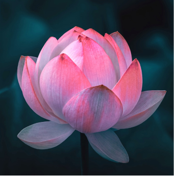

The beauty of lotus flower
Back in Egyptians times, the lotus flower was very important in their religion. Meaning creation and rebirth, it was a symbol of the sun, because at nightfall it closes and goes beneath the water and at dawn it climbs up above the water and reopens. It was the only plant to flower and fruit at the same time, as it would emerge as pure white from the depths of the muddy swamp and grow above the water. One myth that revolves around the lotus is during creation time a giant lotus flower grew out of a pond and from it the sun rose. Also, throughout ancient Egypt the lotus has been pictured in various works of art. It would act as a border to outline a section of artwork, or held in the hands of a god or human. The lotus was also used in their math, helping to count to high decrees. One lotus would act as 1,000 and two lotus as 2,000 and so on.The lotus flower is an aquatic perennial. Sometimes mistaken for the water-lily, the lotus has a distinctively different structure. It also only comes in pink hues or white, whereas the lily comes in many different colors. The roots are implanted in the soil of a river or pond, and the leaves float on the surface. The lotus flower is an aquatic perennial. Sometimes mistaken for the water-lily, the lotus has a distinctively different structure. It also only comes in pink hues or white, whereas the lily comes in many different colors. The roots are implanted in the soil of a river or pond, and the leaves float on the surface.
Facts about lotus flower
- The lotus flower is a very popular tattoo
- It is a symbol of awakening to the spiritual reality of life in Hinduism and Buddhism
- Though the meaning varies a little between religions, both traditions place importance on it
- They are very popular for people who’ve had tough times in their life and are finally coming out of it